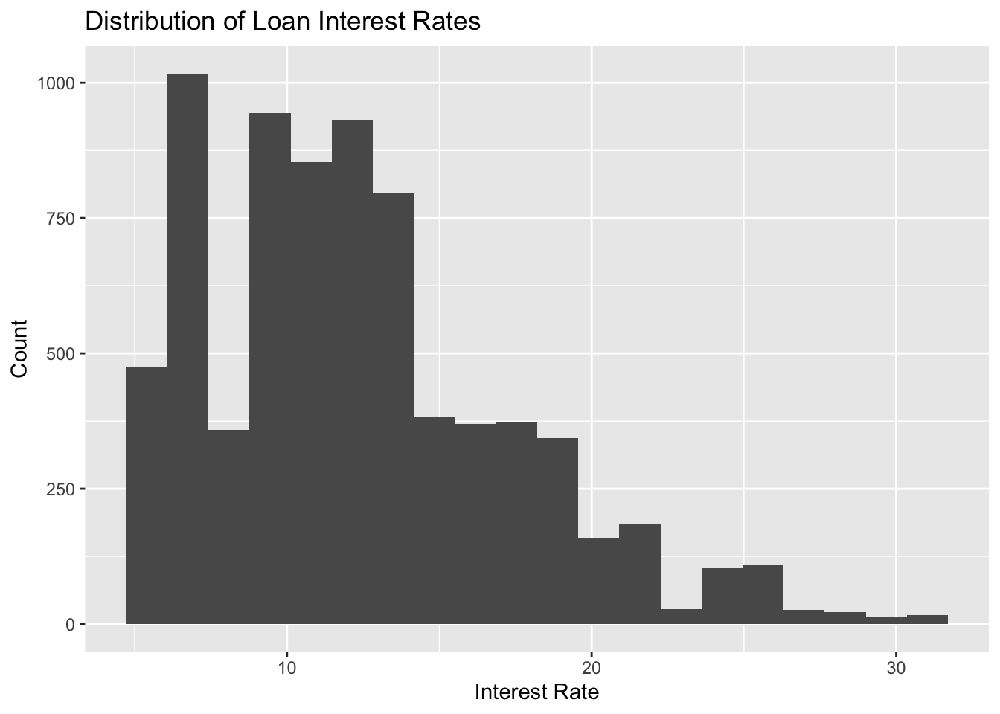
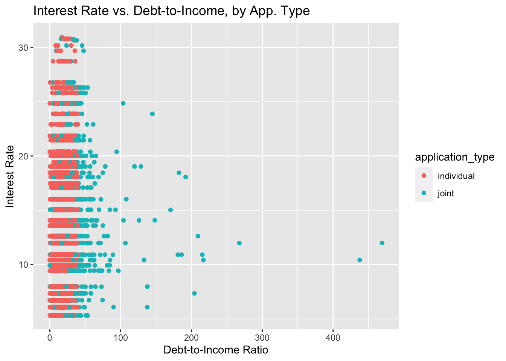

library(tidyverse)
library(tidymodels)
library(knitr)
library(openintro)
library(dplyr)Modeling loans - Solutions
eCOTS 2022 - Modern Regression
Demo
Introduction
In today’s workshop, we will explore how to use framework to perform data wrangling and modeling the data. We will start with some exploratory data analysis (EDA), walk through how to create the key components of a predictive model (models, recipes, and workflows), and how to perform cross-validation. Throughout we will be using the dataset from the OpenIntro textbook
The exercises below are drawn from an exam review. Students would have already completed readings, some assignments, and labs prior to attempting these questions.
You may notice some code below has already been pre-populated for you. In these cases, there is a flag set as . Make sure to remove this flag prior to running the relevant code chunk to avoid any errors when rendering the pdf.
Exercise 0: Data Cleanup
We are going to do a preliminary cleaning step. Let’s drop any unused levels.
glimpse(loans_full_schema)Rows: 10,000
Columns: 55
$ emp_title <chr> "global config engineer ", "warehouse…
$ emp_length <dbl> 3, 10, 3, 1, 10, NA, 10, 10, 10, 3, 1…
$ state <fct> NJ, HI, WI, PA, CA, KY, MI, AZ, NV, I…
$ homeownership <fct> MORTGAGE, RENT, RENT, RENT, RENT, OWN…
$ annual_income <dbl> 90000, 40000, 40000, 30000, 35000, 34…
$ verified_income <fct> Verified, Not Verified, Source Verifi…
$ debt_to_income <dbl> 18.01, 5.04, 21.15, 10.16, 57.96, 6.4…
$ annual_income_joint <dbl> NA, NA, NA, NA, 57000, NA, 155000, NA…
$ verification_income_joint <fct> , , , , Verified, , Not Verified, , ,…
$ debt_to_income_joint <dbl> NA, NA, NA, NA, 37.66, NA, 13.12, NA,…
$ delinq_2y <int> 0, 0, 0, 0, 0, 1, 0, 1, 1, 0, 0, 0, 0…
$ months_since_last_delinq <int> 38, NA, 28, NA, NA, 3, NA, 19, 18, NA…
$ earliest_credit_line <dbl> 2001, 1996, 2006, 2007, 2008, 1990, 2…
$ inquiries_last_12m <int> 6, 1, 4, 0, 7, 6, 1, 1, 3, 0, 4, 4, 8…
$ total_credit_lines <int> 28, 30, 31, 4, 22, 32, 12, 30, 35, 9,…
$ open_credit_lines <int> 10, 14, 10, 4, 16, 12, 10, 15, 21, 6,…
$ total_credit_limit <int> 70795, 28800, 24193, 25400, 69839, 42…
$ total_credit_utilized <int> 38767, 4321, 16000, 4997, 52722, 3898…
$ num_collections_last_12m <int> 0, 0, 0, 0, 0, 0, 0, 0, 0, 0, 0, 0, 0…
$ num_historical_failed_to_pay <int> 0, 1, 0, 1, 0, 0, 0, 0, 0, 0, 1, 0, 0…
$ months_since_90d_late <int> 38, NA, 28, NA, NA, 60, NA, 71, 18, N…
$ current_accounts_delinq <int> 0, 0, 0, 0, 0, 0, 0, 0, 0, 0, 0, 0, 0…
$ total_collection_amount_ever <int> 1250, 0, 432, 0, 0, 0, 0, 0, 0, 0, 0,…
$ current_installment_accounts <int> 2, 0, 1, 1, 1, 0, 2, 2, 6, 1, 2, 1, 2…
$ accounts_opened_24m <int> 5, 11, 13, 1, 6, 2, 1, 4, 10, 5, 6, 7…
$ months_since_last_credit_inquiry <int> 5, 8, 7, 15, 4, 5, 9, 7, 4, 17, 3, 4,…
$ num_satisfactory_accounts <int> 10, 14, 10, 4, 16, 12, 10, 15, 21, 6,…
$ num_accounts_120d_past_due <int> 0, 0, 0, 0, 0, 0, 0, NA, 0, 0, 0, 0, …
$ num_accounts_30d_past_due <int> 0, 0, 0, 0, 0, 0, 0, 0, 0, 0, 0, 0, 0…
$ num_active_debit_accounts <int> 2, 3, 3, 2, 10, 1, 3, 5, 11, 3, 2, 2,…
$ total_debit_limit <int> 11100, 16500, 4300, 19400, 32700, 272…
$ num_total_cc_accounts <int> 14, 24, 14, 3, 20, 27, 8, 16, 19, 7, …
$ num_open_cc_accounts <int> 8, 14, 8, 3, 15, 12, 7, 12, 14, 5, 8,…
$ num_cc_carrying_balance <int> 6, 4, 6, 2, 13, 5, 6, 10, 14, 3, 5, 3…
$ num_mort_accounts <int> 1, 0, 0, 0, 0, 3, 2, 7, 2, 0, 2, 3, 3…
$ account_never_delinq_percent <dbl> 92.9, 100.0, 93.5, 100.0, 100.0, 78.1…
$ tax_liens <int> 0, 0, 0, 1, 0, 0, 0, 0, 0, 0, 0, 0, 0…
$ public_record_bankrupt <int> 0, 1, 0, 0, 0, 0, 0, 0, 0, 0, 1, 0, 0…
$ loan_purpose <fct> moving, debt_consolidation, other, de…
$ application_type <fct> individual, individual, individual, i…
$ loan_amount <int> 28000, 5000, 2000, 21600, 23000, 5000…
$ term <dbl> 60, 36, 36, 36, 36, 36, 60, 60, 36, 3…
$ interest_rate <dbl> 14.07, 12.61, 17.09, 6.72, 14.07, 6.7…
$ installment <dbl> 652.53, 167.54, 71.40, 664.19, 786.87…
$ grade <fct> C, C, D, A, C, A, C, B, C, A, C, B, C…
$ sub_grade <fct> C3, C1, D1, A3, C3, A3, C2, B5, C2, A…
$ issue_month <fct> Mar-2018, Feb-2018, Feb-2018, Jan-201…
$ loan_status <fct> Current, Current, Current, Current, C…
$ initial_listing_status <fct> whole, whole, fractional, whole, whol…
$ disbursement_method <fct> Cash, Cash, Cash, Cash, Cash, Cash, C…
$ balance <dbl> 27015.86, 4651.37, 1824.63, 18853.26,…
$ paid_total <dbl> 1999.330, 499.120, 281.800, 3312.890,…
$ paid_principal <dbl> 984.14, 348.63, 175.37, 2746.74, 1569…
$ paid_interest <dbl> 1015.19, 150.49, 106.43, 566.15, 754.…
$ paid_late_fees <dbl> 0, 0, 0, 0, 0, 0, 0, 0, 0, 0, 0, 0, 0…loans_full_schema <- droplevels(loans_full_schema)Exercise 1: Train-Test Data Split
Now using , split the data into a training and test set with a 75%-25% split. Don’t forget to set a seed!
set.seed(210)
loans_split <- initial_split(loans_full_schema)
loans_train <- training(loans_split)
loans_test <- testing(loans_split)Exercise 2: The Model
Write the model for predicting interest rate (interest_rate) from debt to income ratio (debt_to_income), the term of loan (term), the number of inquiries (credit checks) into the applicant’s credit during the last 12 months (inquiries_last_12m), whether there are any bankruptcies listed in the public record for this applicant (bankrupt), and the type of application (application_type). The model should allow for the effect of to income ratio on interest rate to vary by application type.
\[ \widehat{\texttt{interest\_rate}} = b_0 + b_{DI}\cdot\texttt{debt\_to\_income} + b_{term}\cdot\texttt{term} \\ + b_{CC}\cdot\texttt{inquiries\_last\_12m} + b_{bank}\cdot\texttt{bankrupt} \\ + b_{app}\cdot\texttt{application\_type} + b_{DI:app}\cdot\text{debt\_to\_income:application\_type} \]
Exercise 3: EDA
Explore characteristics of the variables you’ll use for the model using the training data only. Create both univariate and bivariate plots, and make sure to think about which plots are the most appropriate and effective given the data types.
ggplot(loans_train, aes(x = interest_rate)) +
geom_histogram(bins = 20) +
labs(x = "Interest Rate", y = "Count",
title = "Distribution of Loan Interest Rates")
ggplot(loans_train, aes(x = debt_to_income, y = interest_rate,
color = application_type)) +
geom_point() +
labs(x = "Debt-to-Income Ratio", y = "Interest Rate",
title = "Interest Rate vs. Debt-to-Income, by App. Type")
ggplot(loans_train, aes(x = as_factor(if_else(public_record_bankrupt == 0,
"no", "yes")),
y = interest_rate)) +
geom_boxplot() +
labs(x = "Past Bankrupcy Status", y = "Interest Rate",
title = "Boxplots of Interest Rate by Bankruptcy Status")
Exercise 4: Model
Specify a linear regression model. Call it loans_spec.
loans_spec <- linear_reg() %>%
set_engine("lm")Exercise 5: Recipe
- Predict
interest_ratefromdebt_to_income,term,inquiries_last_12m,public_record_bankrupt, andapplication_type. - Mean center
debt_to_income. - Make
terma factor. - Create a new variable:
bankruptthat takes on the value “no” ifpublic_record_bankruptis 0 and the value “yes” ifpublic_record_bankruptis 1 or higher. Then, removepublic_record_bankrupt. - Interact
application_typewithdebt_to_income. - Create dummy variables where needed and drop any zero variance variables.
loans_rec <- recipe(interest_rate ~ debt_to_income +
term + inquiries_last_12m +
public_record_bankrupt + application_type,
data = loans_train) %>%
step_center(debt_to_income) %>%
step_mutate(term = as_factor(term)) %>%
step_mutate(bankrupt = as_factor(if_else(public_record_bankrupt == 0, "no", "yes"))) %>%
step_rm(public_record_bankrupt) %>%
step_dummy(all_nominal_predictors()) %>%
step_interact(terms = ~ starts_with("application_type"):debt_to_income) %>%
step_zv(all_predictors())Exercise 6: Workflow
Create the workflow that brings together the model specification and recipe.
loans_wflow <- workflow() %>%
add_model(loans_spec) %>%
add_recipe(loans_rec)Exercise 7: Cross-Validation and Summary
Conduct 10-fold cross validation.
set.seed(210)
loans_folds <- vfold_cv(loans_train, v = 10)
loans_fit_rs <- loans_wflow %>%
fit_resamples(loans_folds)
loans_fit_rs# Resampling results
# 10-fold cross-validation
# A tibble: 10 × 4
splits id .metrics .notes
<list> <chr> <list> <list>
1 <split [6750/750]> Fold01 <tibble [2 × 4]> <tibble [0 × 3]>
2 <split [6750/750]> Fold02 <tibble [2 × 4]> <tibble [0 × 3]>
3 <split [6750/750]> Fold03 <tibble [2 × 4]> <tibble [0 × 3]>
4 <split [6750/750]> Fold04 <tibble [2 × 4]> <tibble [0 × 3]>
5 <split [6750/750]> Fold05 <tibble [2 × 4]> <tibble [0 × 3]>
6 <split [6750/750]> Fold06 <tibble [2 × 4]> <tibble [0 × 3]>
7 <split [6750/750]> Fold07 <tibble [2 × 4]> <tibble [0 × 3]>
8 <split [6750/750]> Fold08 <tibble [2 × 4]> <tibble [0 × 3]>
9 <split [6750/750]> Fold09 <tibble [2 × 4]> <tibble [0 × 3]>
10 <split [6750/750]> Fold10 <tibble [2 × 4]> <tibble [0 × 3]>Summarize metrics from your CV resamples.
collect_metrics(loans_fit_rs)# A tibble: 2 × 6
.metric .estimator mean n std_err .config
<chr> <chr> <dbl> <int> <dbl> <chr>
1 rmse standard 4.54 10 0.0363 Preprocessor1_Model1
2 rsq standard 0.173 10 0.00646 Preprocessor1_Model1Writing Exercise
In this exercise, we will synthesize our work above to create a reader-friendly version of our conclusions. In the classroom, these sorts of writing exercises appear throughout homework and lab assignments as well as exams. They give students an opportunity to demonstrate their understanding while gaining an appreciation that communication is a crucial part of using statistics.
Exploratory Data Analysis
Using your plots above (along with any other metrics you compute), describe your initial findings about the training data. Discuss why we perform EDA only on the training data and not on the entire data set.
loans_med <- median(loans_train$interest_rate)
loans_iqr <- IQR(loans_train$interest_rate)It appears that the marginal distribution for interest rates is largely unimodal (possibly bimodal since there aren’t many loans issued with interest rates around 7%) with a right-skew. The median interest rate is 11.98 with IQR 5.62.
It appears that there is no strong relationship between debt-to-income when the debt-to-income ratio is low. It seems that the that joint applications generally have higher debt-to-income ratios, but possibly some lower interest rates for highly levered (i.e., high debt-to-income ratios, esepcially greater than 100%) applications. These may be outliers.
The boxplot seems to suggest that while applications with a bankruptcy history have higher interest rates, the difference is very slight.
Model and Model Fit
Although our primary aim is prediction and not inference, its good to check the model fit nonetheless to make sure nothing looks out of the ordinary. Create a neatly organized table of the model output, and describe your observations, such as which parameters are significant. Make sure to interpret some coefficients appropriately.
loans_train_fit <- fit(loans_wflow, data = loans_train)
tidy(loans_train_fit) %>%
kable(digits = 2)| term | estimate | std.error | statistic | p.value |
|---|---|---|---|---|
| (Intercept) | 10.94 | 0.08 | 135.05 | 0.00 |
| debt_to_income | 0.11 | 0.01 | 16.46 | 0.00 |
| inquiries_last_12m | 0.22 | 0.02 | 9.91 | 0.00 |
| term_X60 | 3.84 | 0.11 | 33.41 | 0.00 |
| application_type_joint | -0.08 | 0.16 | -0.53 | 0.59 |
| bankrupt_yes | 0.46 | 0.16 | 2.84 | 0.00 |
| application_type_joint_x_debt_to_income | -0.09 | 0.01 | -12.00 | 0.00 |
From the above table, it appears that all of the coefficients are significant at the 0.05 significance level except for . However, the interaction with is significant, so we want to include the main effect. We find that the sign of the coefficients is intuitive. For instance, as the debt-to-income ratio increases by 1%, the interest rate is predicted to increase by about 0.11% on average, holding all equal. Similarly, relative to loans with a 3-year maturity, loans with a 5-year maturity are predicted to have an interest rate about 3.84% higher on averaged, all else equal.
Cross-Validation
Explain what 10-fold CV does, and why it’s useful. Display a neat table with the outputs of your CV summary, and describe your observations. Make sure to discuss why we are focusing on R-squared and RMSE instead of adjusted R-squared, AIC, and BIC.
10-fold CV splits the training data into roughly 10 equal groups, fits the model on 9 of the groups, and then tests the performance on the remaining 10th group. This is done by leaving one group out at a team, and then averaging the error. We do this because even though we cannot use the test data to in fitting the model, this allows us to get an idea of how well our model performs on data it has not seen before. In turn, we can compare different models based on their predictive performance using metrics like R-squared and RMSE. Since prediction is our primary concern, we use these metrics instead of R-squared, AIC, and BIC.
cv_metrics <- collect_metrics(loans_fit_rs)
cv_metrics %>%
kable(digits=2)| .metric | .estimator | mean | n | std_err | .config |
|---|---|---|---|---|---|
| rmse | standard | 4.54 | 10 | 0.04 | Preprocessor1_Model1 |
| rsq | standard | 0.17 | 10 | 0.01 | Preprocessor1_Model1 |
loan_rmse <- cv_metrics$mean[1]
loan_rsq <- cv_metrics$mean[2]The above table computes the RMSE, which is about 4.54, and the R-squared, which is about 0.17.